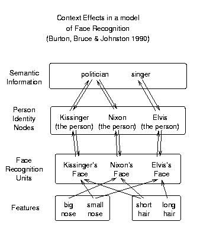

This experiment and theory
provide a good example of the knowledge organization emphasized in the
syllabus. See if you can fill in all the relevant information in the
diagram at left.
This experiment and theory
provide a good example of the knowledge organization emphasized in the
syllabus. See if you can fill in all the relevant information in the
diagram at left.
Experiment by Bruce and Valentine (1986).
For example:
| Target face (Nixon) |
Related familiar face (Kissinger) |
Unrelated familiar face (Presley) |
| (These are not faces used in the original experiment!) | ||
If you were around in the early 1970's, or have studied that period, then President Richard Nixon and Secretary of State Henry Kissinger are strongly related in your personal knowledge. But Elvis Presley is probably not strongly related to Nixon in your knowledge, unless you happened to have fixated on their unlikely meeting.
| Mean RT for familiar targets (in msec) | ||
|---|---|---|
| Unfamiliar Prime | Familiar Unrelated Prime | Familiar Related Prime |
| 827 | 826 | 716 |

The representation involves four levels of representational elements, or "units": Feature units, face recognition units, person identity units, and semantic information units.
The process involves spreading of activation between units. When a face is presented, its features are activated, and activation spreads to connected face units, which are gradually activated. When a face unit reaches a certain threshold activation, the face is declared to be recognized. Activation continues to spread over connections to other layers of units, such that the activation of the priming face spreads through the semantic information units back down to other, related person identity units and face recognition units. Thus, faces that are meaningfully related to the prime get a "head start" when the system tries to recognize them.
This experiment and theory
provide a good example of the knowledge organization emphasized in the
syllabus. See if you can fill in all the relevant information in the
diagram at left.